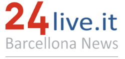

PROFILO PROFESSIONALE
Appassionata di scrittura creativa e giornalismo. Aggiorno costantemente le mie competenze seguendo principalmente corsi di IA e Digital Marketing per offrire una comunicazione sempre al passo con le nuove tecnologie.
Scarica il mio CV (PDF)COMPETENZE E TOOLKIT
Editoriale & SEO
- SEO Copywriting & Strategy
- Editing & Proofreading
- Gestione Piani Editoriali
- Fact-checking & News-gathering
Tech & Data
- WordPress (Livello Avanzato)
- SQL (Querying Databases)
- HTML5 & CSS3 (Sviluppo Base)
Strumenti & Media
- Google Workspace
- Visual Studio Code
- Canva (Grafica Web)
- Social Media Management
FORMAZIONE ACCADEMICA
Diploma di Istituto Tecnico Settore Economico - Indirizzo: "Turismo"
Apri il diploma
ITET "E.Fermi" | 2020 - 2021
Laurea in Scienze dell'informazione: Tecniche Giornalistiche e Social Media
Università degli studi di Messina | In corso
CERTIFICAZIONI & LABORATORI
Laboratorio di Programmazione: strumenti e programmi
Federica Web Learning | Gennaio 2026
Vedi AttestatoSocial Media Marketing: Big Data and artificial intelligence in hospitality & tourism.
Federica Web Learning | Gennaio 2026
Vedi AttestatoESPERIENZE PROFESSIONALI
-
Redattrice di Attualità – Metropolitan Magazine
Produzione di articoli su temi di cultura.
Content Strategy Quality AssuranceVedi i miei articoli su Metropolitan Magazine -
Redattrice di Attualità – 24Live
Realizzazione di articoli su temi di attualità e cronaca; copertura di eventi sul territorio.
Investigative Reporting Source VerificationVedi i miei articoli su 24Live
-
Redattrice Web – UniVersoMe
Gestione contenuti editoriali e ottimizzazione SEO per la testata universitaria.
SEO Management WordPress Team LeadershipVedi i miei articoli su UniVersoMe